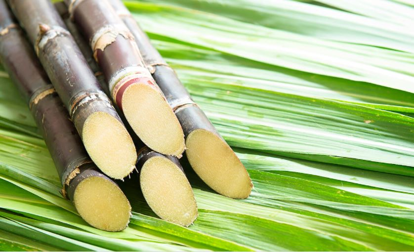

Bioenergia no Brasil
A produção de bioenergia no Brasil está relacionada ao uso de fontes primárias, por exemplo: o bagaço da cana-de-açúcar e madeira. De acordo com a Organização das Nações Unidas para Agricultura e Alimentação, o Brasil ocupa a segunda posição na produção de bioetanol no mundo. A biomassa é também muito utilizada pra produzir eletricidade no Brasil, estando atrás apenas da hidreletricidade. Cerca de 43% da energia produzida no país vem de fontes renováveis. Hoje, a cana-de-açúcar é equivalente a, aproximadamente, 17% da matriz energética brasileira. Em 2016, o Ministério de Minas e Energia divulgou que a biomassa é a segunda fonte mais importante para geração de energia do Brasil. Dados divulgados pela Resenha Energética Brasileira no mesmo ano mostraram que a bioenergia corresponde a 29,9% da matriz energética do país. O maior potencial de produção de energia por meio da biomassa é na região Sudeste, especialmente no estado de São Paulo.
Desafios
A bioenergia possui dois problemas para o meio ambiente: retirada da cobertura vegetal de grandes áreas para produção agrícola e o uso de grande quantidade de água. Outra preocupação refere-se à necessidade de alimentos, que pode ser prejudicada pela produção agrícola destinada à obtenção de energia. Assim, cabe à sociedade e aos governos encontrar uma maneira de aumentar o uso de bioenergia sem causar grandes impactos negativos ao meio ambiente e sem afetar a produção de alimentos.
